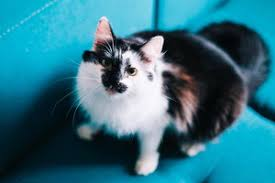

Леонардо Леонардо Леонардо
Возраст: 3 года
Порода: Японский
Болезни: Нет
Статус: ищет хозяина
Добрый, любопытный, ручной
Возрост 3 года
Дружит с другими котами. Является их людером, когда дело доходит до поиска еды.